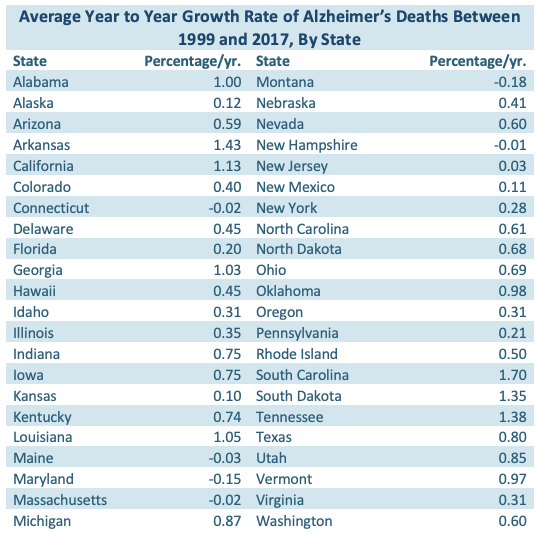
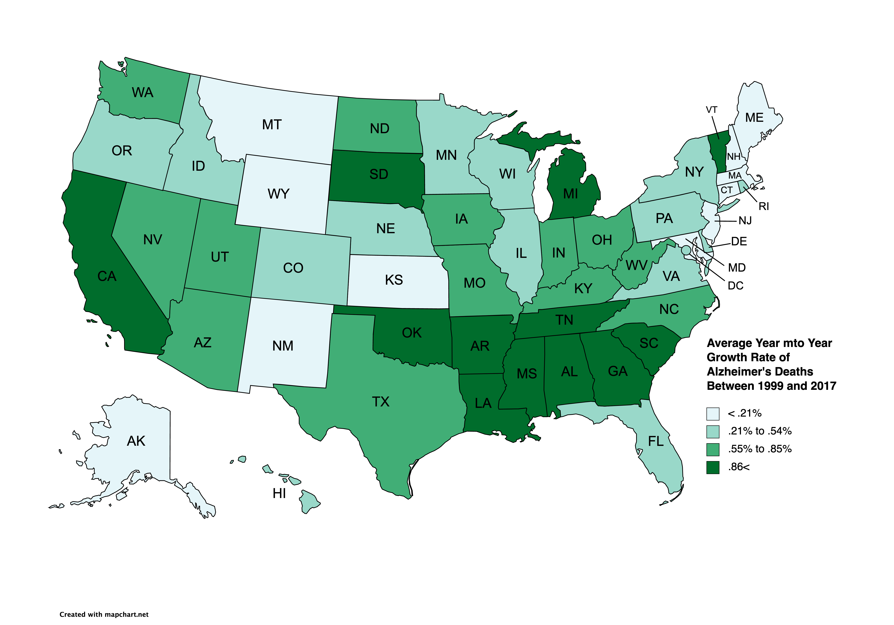

Alzheimers Deaths in America: A Final Project by Brea Chaney | |
|
Alzheimer’s has unfortunately been on the rise across the country for over a decade now, and I was curious as to which states had the highest diagnosis. Unfortunately, the only datasets I could find with that information were very large, and my computer was having a hard time. Instead, I found this dataset from Kaggle.com, which allowed me to access the number of Alzheimer's related deaths in each state between the years 1999 and 2017. The death rates listed in this dataset are per 100,000 people and have also been adjusted for age. Slightly more morbid data, but interesting nevertheless.
Once finding this dataset I was curious as to which states had the largest increases in Alzheimer's related deaths over time. To answer this question, I first separated the data by cause of death and then by state. Then using linear regression on each 50 subsets of data, I was able to find the average year to year growth rate of Alzheimer's related deaths for each state. I then calculated the first, second, and third quartiles. With my newly interpreted data, I created the table on the right and the infographic below. |
 |
|  |
My findings show significant increase in the southern states, although Florida is the exception. The north east had the least amount of growth, which I would assume is due to their economic status and ability to afford healthcare. I'd be curious to know why the rate of death has been growing so much in Vermont though. |